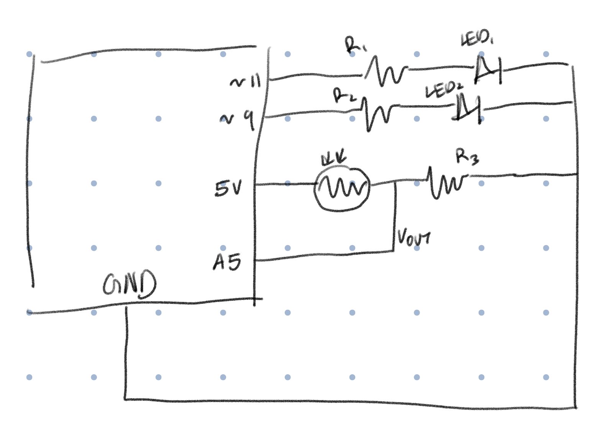
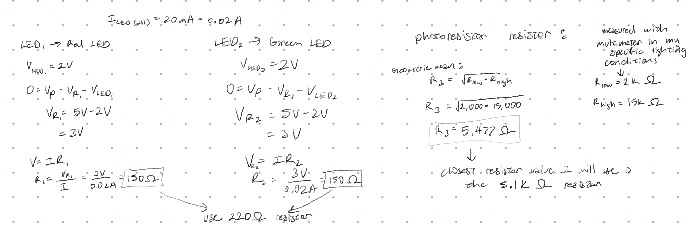
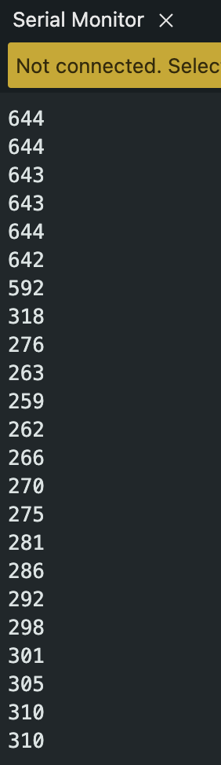
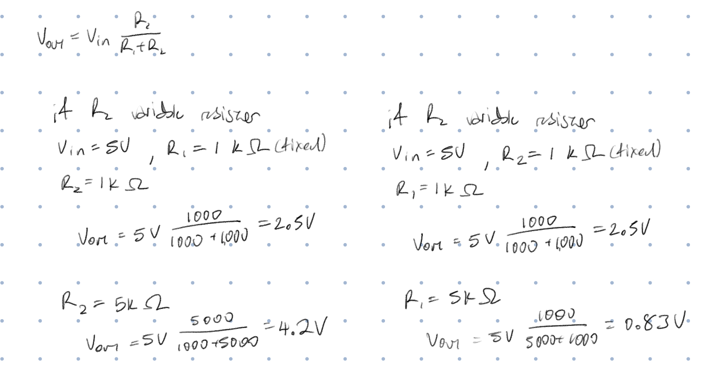
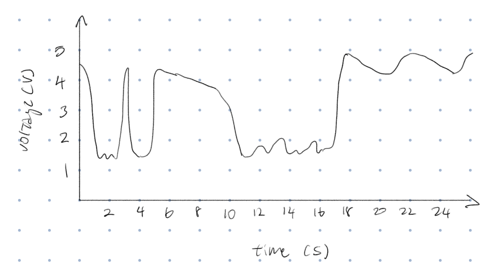

Here is all the documentation for assignment 3!
Here is all the documentation for assignment 3!

The schematic shows the use of a photoresistor and 2 LEDs.

For the LEDs, I used Ohm's and Kirchoff's laws to calculate a resistor value of 150 ohms. Since I don't have a 150 ohm resistor, I used a 220 ohm resistor. For the photoresistor, I used a multimeter to measure the lowest resistance value and the highest resistance value under the lighting conditions that I had. Once I got those values, I calculated the resistor value using the geomeotric mean and ended up with a resistor value of 5.47k ohms. However, since I didn't have a 5.5k ohm resistor, I used the 5.1k ohm resistor instead.
The circuit has 2 LEDs connected to the 11 and 9 pins, and a photoresistor that is connected to 5V and a sensor wire conncected to A5. All components are connected to ground.
//create a variable for the red LED pin
int redPin = 11;
//create a variable for the green LED pin
int greenPin = 9;
//create a variable for the pin that reads in the photoresistor
int photoPin = A5;
//create a variable for the minimum value the resistor reads
int minPhotoVal = 250;
//create a variable for the maximum value the resistor reads
int maxPhotoVal = 700;
//create a variable for a middle value the resistor reads
int midPhotoVal = 400;
void setup() {
// put your setup code here, to run once:
//sets up the photoresistor to be read as an input
pinMode(photoPin, INPUT);
//sets up the red LED to be an output
pinMode(redPin, OUTPUT);
//sets up the green LED to be an output
pinMode(greenPin, OUTPUT);
//sets up serial mode to be able to print to the serial moniter
Serial.begin(9600);
}
void loop() {
// put your main code here, to run repeatedly:
//creates a variable for the current value of the photoresistor
int photoVal = analogRead(photoPin);
//prints the photoresistor value to the serial moniter
Serial.println(photoVal);
//creates a variable for the analog value to give to the red LED by mapping the photoresistor value to analog values
int redLedVal = map(photoVal, midPhotoVal, maxPhotoVal, 0, 255);
//creates a variable for the analog value to give to the green LED by mapping the photoresistor value to analog values
int grnLedVal = map(photoVal, minPhotoVal, maxPhotoVal, 0, 255);
//if the photoresistor has a value greater than 400, then the red LED will be turned on
if(photoVal > midPhotoVal){
//sets the red LED brightness according to the mapped analog value
analogWrite(redPin, redLedVal);
//turns the green LED off
analogWrite(greenPin, 0);
//if the photoresistor has a value less than 400, then the green LED will be turned on
} else {
//sets the green LED brightness according to the mapped analog value
analogWrite(greenPin, grnLedVal);
//turns the red LED off
analogWrite(redPin, 0);
}
//waits 50 milliseconds before repeating the loop
delay(50);
}

When light is hitting the photoresister, the red LED is on and the green LED is off. When the photoresistor has no light (or as little light as possible), the green LED is on and the red LED is off. When I adjust the brightness of the light hitting the photoresistor, the red light dims. When there is a little bit of light hitting the photoresistor, the green light dims. As the amount of light hitting the photoresistor adjusts, the value the photoresistor reads is printed to the serial monitor.

The variable resistor can be either R1 or R2. In the example calculations below, the voltage that Vout reads changes depending on the size of the variable resistor. When R2 is the variable resistor, the bigger R2 is, the bigger the Vout is. When R1 is the variable resistor, the bigger R1 is, the smaller Vout is. It works but the position of the variable resistor can create a positive or negative relationship.

It would increase the amount of data that can be read or written to. So when mapping, the read value would be from 0 to a value that’s bigger than 1023, and the write values would range from 0 to 1023.